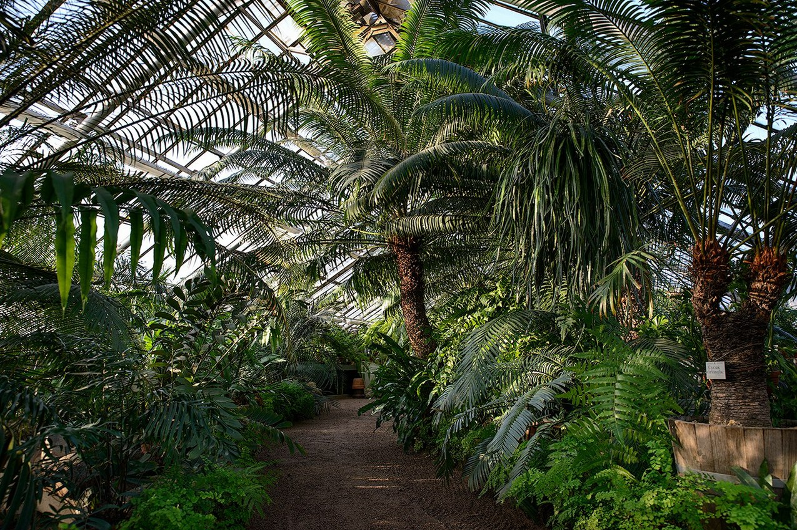

| ДОБРО ПОЖАЛОВАТЬ В НАШ БОТАНИЧЕСКИЙ САД! | |
|---|---|
|
Виды растений: |
Ботанический садБотанический сад — это уникальное место, где природа раскрывает свою красоту и разнообразие. В этом оазисе зелени собрано множество видов растений со всех уголков мира, представляя настоящий ботанический архив. Посетители могут насладиться великолепием цветов, ароматами и формами, создавая при этом неповторимую атмосферу умиротворения. Первое, что поражает посетителя ботанического сада, это его красочное разнообразие. Здесь собраны растения со всех уголков земного шара – от экзотических тропиков до холодных полярных регионов. Величественные деревья, красочные цветы, зеленые лужайки – всё это создает удивительный ландшафт, в котором можно погрузиться, наслаждаясь естественной красотой. Ботанические сады также служат важным образовательным ресурсом. Посетители могут получить знания о различных растениях, их биологии, экологической роли и практическом применении. Многие сады предоставляют информацию в интересной и доступной форме, сделав обучение увлекательным процессом. Одной из важных задач ботанических садов является создание условий для воспроизводства и сохранения уязвимых растений. Это включает в себя создание и поддержание оптимальных условий для их роста, размножения и адаптации к новым условиям среды. Часто сады сотрудничают с другими учреждениями и научными лабораториями для проведения исследований по разведению растений. |
| ПРИХОДИТЕ К НАМ! | |